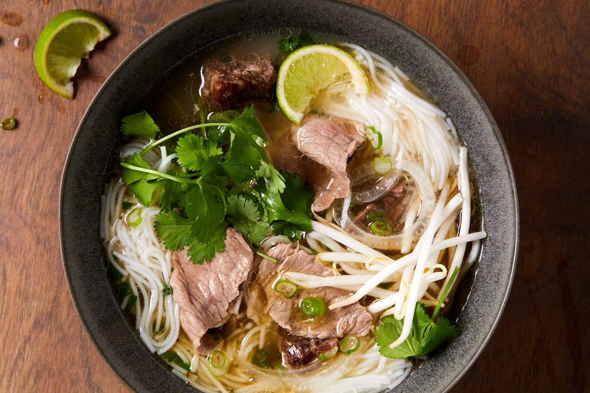

Pho

Description
Pho is a very popular Vietnamese noodle soup, served all across Vietnam at households, street stalls, and restraunts. It is considered Vietnam's national dish. Because of waves of refugees that were casused after the Vietnam War, pho was popularized across the world as the Vietnamese brought their dish to their new homes.
Pho's origins are not well-known, and there are two different styles of pho - Hanoi (Northern) and Saigon (Souther). They differ by noodle width, sweetness of broth, and choice of herbs.Pho was originally sold by street vendors, carrying it on carrying poles; one of which housed a cauldron over a wood fire, and the othher holding noodles, spices, and all the cookware to prepare a bowl. Hanoi was home to the first two fixed stands and will eventually spread throughout the country.
Ingredients
- 2 large onions, halved
- 5oz/150g ginger, sliced down the center
- 10 star anise
- 4 cinnamon quills
- 4 cardamon pods
- 3 spice cloves
- 1.5 tablespoon coriander seeds
- 3lb/1.5kg beef brisket
- 2lb/1kg meaty beef bones
- 2lb/1kg marrow bones, cut to reveal marrow
- 3.75 quarts/3.5 liters water (15 cups)
- 2 tablespoon white sugar
- 1 tablespoon salt
- 3 tablespoons/40ml fish sauce
- 1.5oz/50g dried rice sticks
- 1oz/30oz beef tenderloin, very thinly sliced
- 3-5 brisket slices
- Beansprouts, handful
- Thai basil, 3-5 sprigs
- Lime wedges
- Finely sliced red chili
- Hoisin sauce
- Sriracha
Preparation
Aromatics
- Heat a heavy based skillet over high heat (no oil) until smoking.
- Place onion and ginger in pan cut side down. Cook for a few minutes until it's charred, then turn. Remove and set aside.
- Toast Spices lightly in a dry skillet over medium high heat for 3 minutes.
Remove Impurities
- Rinse bones & brisket then cover with water in large stock pot.
- Boil for 5 minutes, then drain.
- Rinse each bone and brisket under tap water.
Broth
- Wipe pot clean, bring 3.75 quarts / 3.5 litres water to boil.
- Add bones and brisket, onion, ginger, Spices.
- Add onion, ginger, Spices, sugar and salt - water should just barely cover everything.
- Cover with lid, simmer 3 hours.
- Remove brisket (should be fall-apart tender), cool then refrigerate for later.
- Simmer remaining soup UNCOVERED for 40 minutes.
- Strain broth into another pot, discard bones and spices. Should be about 2.65 quarts / 2.5 litres (10 cups), if loads more, reduce.
- Add fish sauce, adjust salt and sugar if needed. Broth should be beefy, fragrant with spices, savoury and barely sweet
Assemble
- Prepare rice noodles per packet, just prior to serving.
- Place noodles in bowl. Top with raw beef and brisket.
- Ladle over about 14 oz / 400ml hot broth - will cook beef to medium rare.
- Serve with toppings on the side!